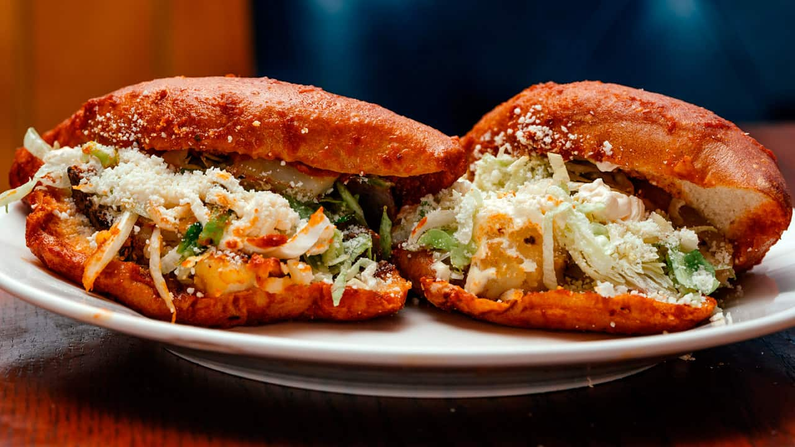
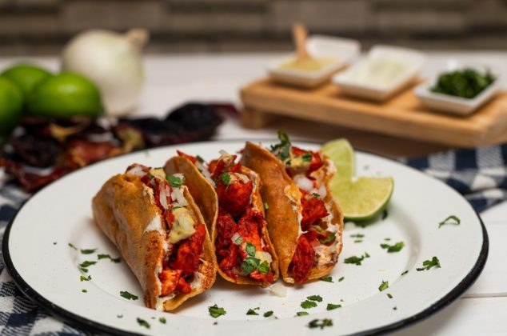
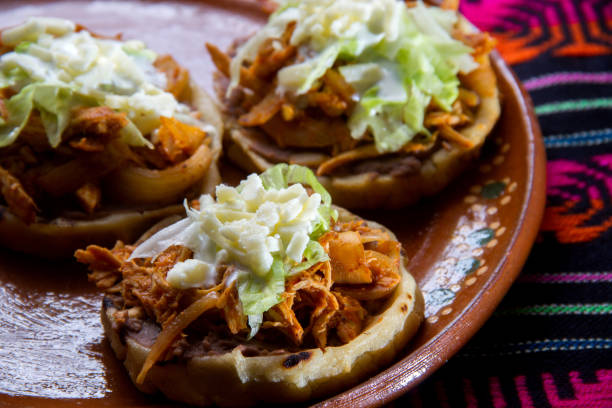
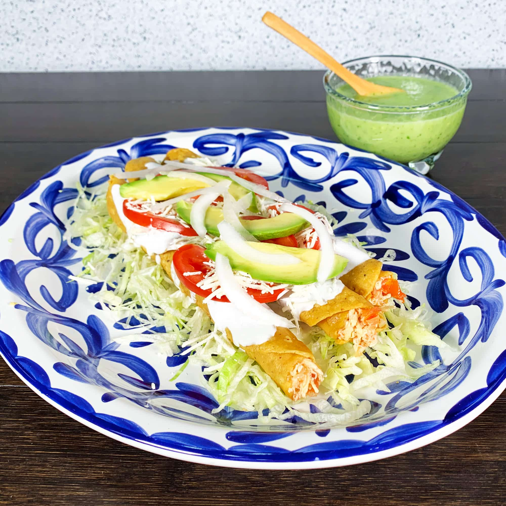
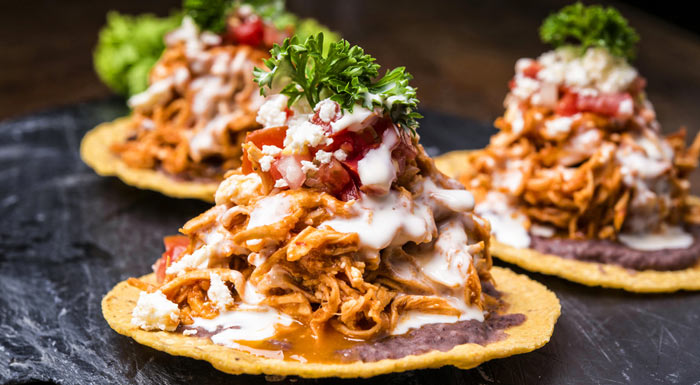

Ubicación
Las Águilas, Nezahualcóyotl, CDMX
Nuestro Menú
🌮 Tacos

Tacos de Pastor
Clásicos tacos de pastor con piña y cilantro.

Tacos de Suadero
Jugosos tacos de suadero acompañados de verdura.
🥟 Antojitos

Pambazo
Relleno de papa con chorizo o pollo, acompañado de crema, lechuga y queso.

Quesadillas
Pollo, queso o champiñones, acompañadas de salsa y verdura.

Sopes
De frijol con longaniza, servidos con crema y queso.

Flautas
Doradas de pollo con lechuga, crema y queso.

Gorditas
De chicharrón o frijol, recién hechas.

Tostadas
De tinga de pollo o res, con crema, lechuga y queso.
🍲 Especialidades

Pozole Rojo
Acompañado de lechuga, rábanos, orégano y tostadas.
Caldo de Gallina
Con verduras y huevo cocido al gusto.
Contáctanos
Tel: 56503936
Email: brandonxguzman16@gmail.com